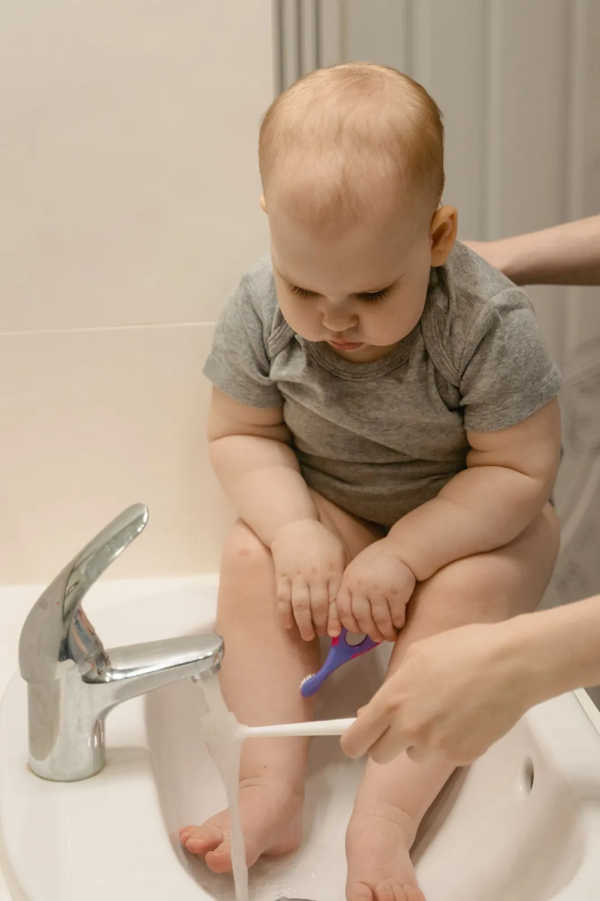
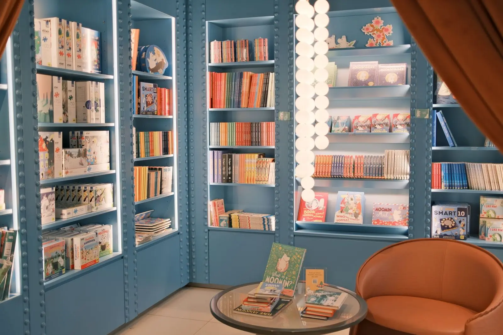
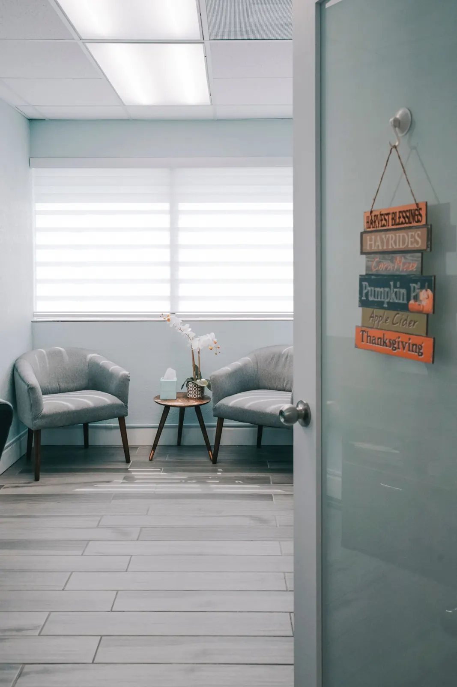

Odontopediatria exclusiva · Recife
Pequenos sorrisos merecem grandes cuidados.
Clínica só para bebês e crianças, do primeiro dente à troca da dentição. Consultas com hora marcada, tempo para conversar e responsáveis por perto o tempo todo.
- Do bebê aos 12 anos
- Responsável junto na sala
- Planos e particular

Nosso jeito
Aqui, cada criança tem seu próprio tempo.
Tem criança que abre a boca na primeira visita. Tem criança que precisa de três visitas para sentar na cadeira. As duas estão certas.
- Consultas sem pressaA agenda reserva tempo para apresentar o espaço, conversar e só então examinar.
- Você participaBebês são examinados no colo do responsável. Crianças maiores escolhem quem fica perto.
- Explicação antes de tudoA dentista mostra o que vai fazer com palavras da idade da criança, e explica para você o porquê.
- Prevenção em primeiro lugarO objetivo é que a criança venha para revisar, não para tratar. Para isso, orientamos a rotina de casa.
Em destaque
A primeira consulta do bebê
Quando nasce o primeiro dente, ou até o primeiro aniversário, é a hora de vir. É uma consulta de conversa e orientação, com exame rápido no colo de quem acompanha.
- Conversa sobre amamentação, mamadeira, chupeta e sono
- Exame da boca no colo, joelho com joelho com a dentista
- Como limpar gengiva e dentinhos, na prática, com você
- Plano de retornos combinado com a família

Foto de referência ilustrativaCuidado por idade
Cada fase pede um cuidado diferente
Os dentes, os hábitos e o jeito de conversar mudam muito do primeiro ao décimo segundo ano. O atendimento acompanha essas mudanças.
Bebês
- Primeira consulta e orientação
- Nascimento dos dentes
- Amamentação, mamadeira e chupeta
- Limpeza da boca no dia a dia
Primeira infância
- Prevenção e flúor quando indicado
- Hábitos: dedo, chupeta, respiração
- Primeiras restaurações, se necessárias
- Brincadeira como apresentação
Crianças
- Troca dos dentes de leite
- Selante nos molares permanentes
- Acompanhamento da mordida
- Ortopedia funcional, se indicada
Tratamentos
Do cuidado de rotina ao tratamento, explicado para a família
Somente o que é próprio da infância. Cada tratamento tem uma página curta: o que é, para que serve, quando costuma ser indicado e como avaliamos.
Prevenção e orientação
Limpeza, controle de placa e orientação de escovação e alimentação para a família.
Aplicação de flúor
Reforço do esmalte em consultório, na frequência que a avaliação indicar.
Selante
Proteção dos sulcos dos dentes de trás, onde a escova alcança menos.
Avaliação de cárie
Exame do risco de cárie e acompanhamento de manchas brancas iniciais.
Restaurações
Tratamento de cavidades em dentes de leite e permanentes, com materiais adequados à idade.
Acompanhamento da mordida
Observação do crescimento e de como os dentes se encaixam, desde cedo.
Ortopedia funcional
Quando indicada, aparelhos que orientam o crescimento dos maxilares.
Primeira consulta do bebê
Conversa com a família, exame no colo e orientações para os primeiros dentes.
Não sabe qual cuidado seu filho precisa? A consulta de avaliação começa por aí.
Agendar avaliaçãoO espaço
Um lugar pensado na altura delas
Recepção calma, área kids, cantinho de livros, espaço para os pais e consultórios com teto ilustrado. Tudo para a criança chegar curiosa, não tensa.





Como funciona
Da mensagem ao retorno, em cinco passos
- Você conta sobre a criança
Pelo formulário ou WhatsApp: idade, motivo e o melhor período.
- A equipe confirma
Respondemos com os horários disponíveis e tiramos suas dúvidas.
- Chegada sem pressa
A criança conhece a recepção, a área kids e a cadeira antes do exame.
- Consulta e conversa
Exame, explicação do que foi visto e orientações para casa.
- Retorno combinado
Você sai sabendo quando voltar e, se houver tratamento, o plano por etapas.
Para os pais
Quanto creme dental usar?
É uma das dúvidas mais comuns no consultório. Escolha a idade e veja a referência geral. No guia para os pais tem mais: escovação por idade, fio dental, alimentação, mamadeira noturna e quando procurar a clínica.
Gaze ou dedeira, sem creme dental
Antes dos dentes, limpe a gengiva com gaze ou fralda limpa umedecida em água, uma vez ao dia, de preferência à noite.
Referência geral para creme dental com flúor (1.000 a 1.500 ppm). A quantidade e o tipo podem mudar conforme o risco de cárie: siga a orientação da dentista da criança.
Perguntas
O que as famílias mais perguntam
Não achou sua dúvida? Escreva para a gente, quem responde é a equipe da clínica.
Perguntar no WhatsAppCom que idade devo trazer meu filho pela primeira vez?
As sociedades de odontopediatria recomendam a primeira consulta quando nasce o primeiro dente, ou até o primeiro aniversário. Se o bebê ainda não tem dentes e você tem dúvidas sobre amamentação, chupeta ou higiene da boca, também pode agendar.
E se meu filho chorar ou não quiser abrir a boca?
Chorar é uma forma de comunicação e acontece com muitas crianças, principalmente as menores. A equipe respeita o tempo de cada uma: a primeira visita pode ser só para conhecer o espaço, a cadeira e os instrumentos. Nada é feito às pressas, e o responsável acompanha o atendimento.
Posso entrar junto na sala?
Sim. Bebês são examinados no colo do responsável, e crianças maiores podem ter você por perto o tempo todo. Em alguns momentos a dentista pode sugerir uma conversa a sós com a criança, sempre combinada com você.
Vocês atendem convênio?
Atendemos alguns planos odontológicos (nesta demonstração, nomes fictícios como Plano Sorriso Exemplo e Rede Dente de Leite) e também particular. A cobertura depende do seu plano: confirme pelo WhatsApp antes da consulta, com o nome do plano e a carteirinha da criança.
Meu filho bateu o dente. O que eu faço?
Mantenha a calma, lave a boca com água e, se o dente tiver saído inteiro, guarde-o em leite ou soro fisiológico. Entre em contato pelo WhatsApp ou telefone o quanto antes para orientarmos e verificarmos o primeiro horário disponível. Fora do horário de atendimento, procure um pronto-atendimento.
Com que frequência a criança deve voltar?
Depende do risco de cárie e da fase da criança. Muitas voltam a cada seis meses, mas algumas precisam de retornos mais próximos. O intervalo é combinado com você ao final de cada consulta.
Vamos conhecer seu pequeno?
Conte a idade e o motivo da visita. A equipe responde pelo WhatsApp e confirma o horário com você.